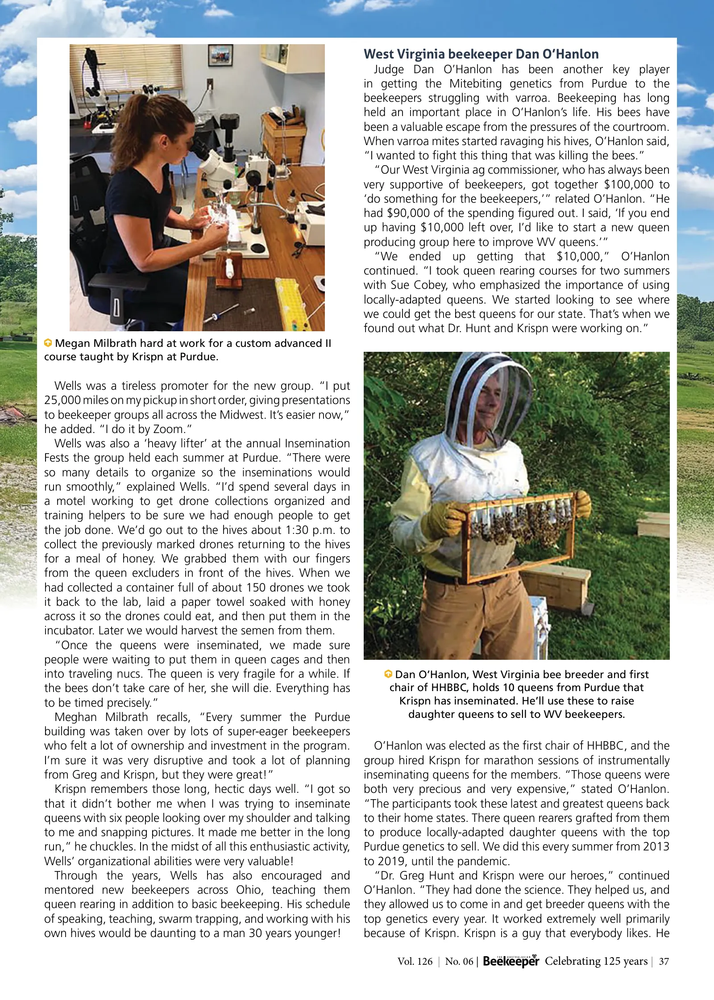

Wells was a tireless promoter for the new group. “I put
25,000 miles on my pickup in short order, giving presentations
to beekeeper groups all across the Midwest. It’s easier now,”
he added. “I do it by Zoom.”
Wells was also a ‘heavy lifter’ at the annual Insemination
Fests the group held each summer at Purdue. “There were
so many details to organize so the inseminations would
run smoothly,” explained Wells. “I’d spend several days in
a motel working to get drone collections organized and
training helpers to be sure we had enough people to get
the job done. We’d go out to the hives about 1:30 p.m. to
collect the previously marked drones returning to the hives
for a meal of honey. We grabbed them with our fingers
from the queen excluders in front of the hives. When we
had collected a container full of about 150 drones we took
it back to the lab, laid a paper towel soaked with honey
across it so the drones could eat, and then put them in the
incubator. Later we would harvest the semen from them.
“Once the queens were inseminated, we made sure
people were waiting to put them in queen cages and then
into traveling nucs. The queen is very fragile for a while. If
the bees don’t take care of her, she will die. Everything has
to be timed precisely.”
Meghan Milbrath recalls, “Every summer the Purdue
building was taken over by lots of super-eager beekeepers
who felt a lot of ownership and investment in the program.
I’m sure it was very disruptive and took a lot of planning
from Greg and Krispn, but they were great!”
Krispn remembers those long, hectic days well. “I got so
that it didn’t bother me when I was trying to inseminate
queens with six people looking over my shoulder and talking
to me and snapping pictures. It made me better in the long
run,” he chuckles. In the midst of all this enthusiastic activity,
Wells’ organizational abilities were very valuable!
Through the years, Wells has also encouraged and
mentored new beekeepers across Ohio, teaching them
queen rearing in addition to basic beekeeping. His schedule
of speaking, teaching, swarm trapping, and working with his
own hives would be daunting to a man 30 years younger!
West Virginia beekeeper Dan O’Hanlon
Judge Dan O’Hanlon has been another key player
in getting the Mitebiting genetics from Purdue to the
beekeepers struggling with varroa. Beekeeping has long
held an important place in O’Hanlon’s life. His bees have
been a valuable escape from the pressures of the courtroom.
When varroa mites started ravaging his hives, O’Hanlon said,
“I wanted to fight this thing that was killing the bees.”
“Our West Virginia ag commissioner, who has always been
very supportive of beekeepers, got together $100,000 to
‘do something for the beekeepers,’” related O’Hanlon. “He
had $90,000 of the spending figured out. I said, ‘If you end
up having $10,000 left over, I’d like to start a new queen
producing group here to improve WV queens.’”
“We ended up getting that $10,000,” O’Hanlon
continued. “I took queen rearing courses for two summers
with Sue Cobey, who emphasized the importance of using
locally-adapted queens. We started looking to see where
we could get the best queens for our state. That’s when we
found out what Dr. Hunt and Krispn were working on.”
Dan O’Hanlon, West Virginia bee breeder and first
chair of HHBBC, holds 10 queens from Purdue that
Krispn has inseminated. He’ll use these to raise
daughter queens to sell to WV beekeepers.
Megan Milbrath hard at work for a custom advanced II
course taught by Krispn at Purdue.
O’Hanlon was elected as the first chair of HHBBC, and the
group hired Krispn for marathon sessions of instrumentally
inseminating queens for the members. “Those queens were
both very precious and very expensive,” stated O’Hanlon.
“The participants took these latest and greatest queens back
to their home states. There queen rearers grafted from them
to produce locally-adapted daughter queens with the top
Purdue genetics to sell. We did this every summer from 2013
to 2019, until the pandemic.
“Dr. Greg Hunt and Krispn were our heroes,” continued
O’Hanlon. “They had done the science. They helped us, and
they allowed us to come in and get breeder queens with the
top genetics every year. It worked extremely well primarily
because of Krispn. Krispn is a guy that everybody likes. He
Vol. 126 | No. 06 |
Celebrating 125 years | 37